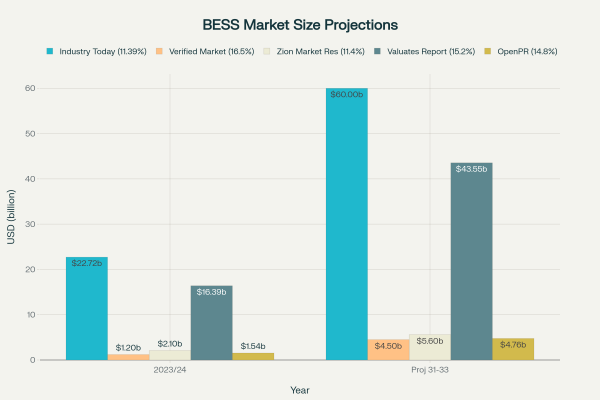
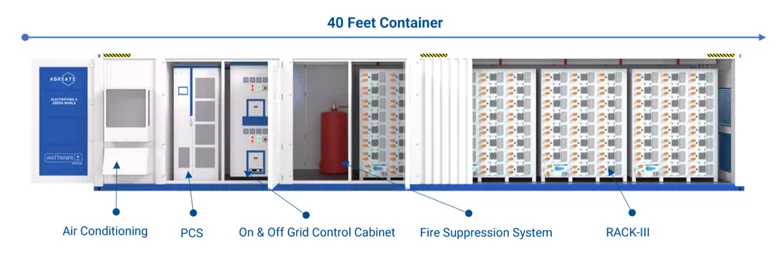
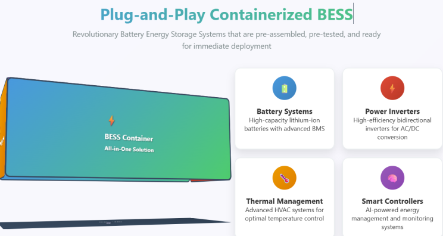
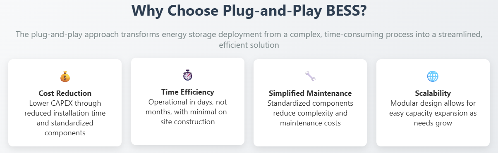
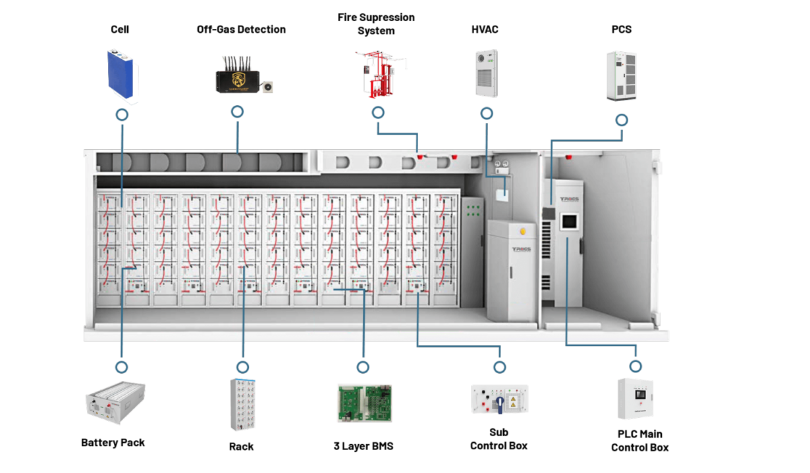
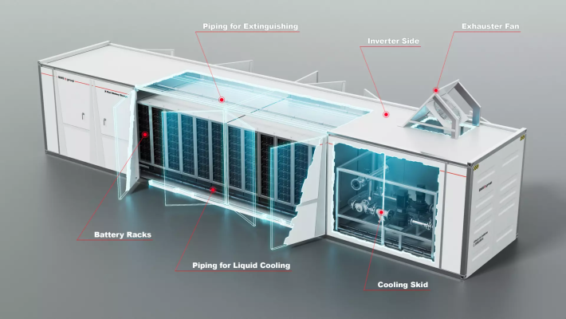
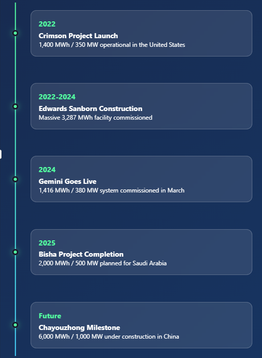
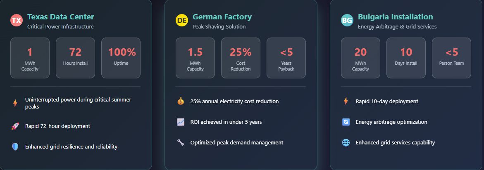

The energy storage revolution is being driven by an innovative solution that's transforming how we deploy and scale battery systems: containerized Battery Energy Storage Systems (BESS). These modular, plug-and-play solutions are rapidly gaining traction across utilities, commercial facilities, and industrial applications worldwide, offering unprecedented flexibility and scalability in energy storage deployment.
Market Growth Trajectory
The containerized BESS market is experiencing explosive growth, with multiple industry reports projecting substantial expansion through the early 2030s. Market valuations vary significantly across research firms, reflecting the rapidly evolving nature of this emerging sector.

The market's rapid expansion is driven by several key factors: the accelerating deployment of renewable energy sources, which require efficient storage solutions to manage intermittency, and the increasing need for mobile and emergency energy storage in disaster recovery operations, off-grid applications, and temporary construction sites. The plug-and-play design of containerized systems makes them particularly attractive for these diverse applications.
Key Components of a Containerized BESS

What Makes Containerized BESS Revolutionary
Modular Design and Scalability
Containerized BESS represents a fundamental shift from traditional fixed energy storage installations. These systems house batteries, power electronics, and control systems within standardized shipping containers, typically 20-foot or 40-foot ISO containers. This modular approach allows for easy deployment, maintenance, and integration with existing power infrastructures.
The systems are inherently scalable and modular, with solutions ranging from 30-500kW power and 200-2800kWh capacity in individual containers. For larger storage requirements, multiple containers can be combined seamlessly, enabling users to adapt to changing energy needs without disrupting operations.
Plug-and-Play Functionality
The true innovation lies in the plug-and-play functionality that containerized BESS offers. These systems are pre-assembled, pre-tested, and delivered ready for immediate deployment. This approach dramatically reduces installation time and costs compared to traditional battery systems, which often require extensive customization and on-site construction.

Key plug-and-play features include:
- All-in-one design complete with batteries, inverters, thermal management, fire suppression, and smart controllers
- Reduced installation time leading to decreased CAPEX
- Flexible deployment in various locations from urban environments to remote areas
- Standardized components that ensure compatibility and reduce maintenance complexity

A cornerstone of the plug-and-play concept, these systems are pre-assembled and rigorously factory-tested before delivery. This significantly reduces on-site installation time and associated costs. Their inherent functionality means they can be deployed and operational in a matter of days. A Texas data center impressively installed a 1MWh ESS container in just 72 hours to ensure uninterrupted power during peak summer demand. In Bulgaria, a modular BESS design enabled five people to complete a 20 MWh installation within a remarkable 10 days, highlighting the efficiency of this approach.
Advanced Safety and Thermal Management
Comprehensive Safety Systems
Modern containerized BESS incorporate sophisticated safety features to address the inherent risks of lithium-ion battery systems. The industry has developed multi-layered protection systems that include:

- Advanced detection systems with temperature sensors, smoke detectors, and gas monitoring for combustible gases like hydrogen and carbon monoxide.
- Fire suppression systems including FM200 gas fire-fighting systems and smoke sensors in each battery cluster.
- Thermal runaway prevention through intelligent battery management systems and early warning systems.
- Pressure relief and fire resistance design features that enable automatic pressure relief and fire blocking in extreme cases.
Thermal Management Innovation
Effective thermal management is critical for battery performance, safety, and longevity. Containerized BESS feature sophisticated thermal management systems (TMS) that ensure optimal operating temperatures:
- Liquid cooling systems that provide superior heat dissipation compared to air-based systems
- Independent thermal management for each battery cluster with industrial air conditioning systems
- Uniform temperature distribution to prevent localized hotspots that can lead to battery degradation
- Integration with battery management systems for real-time monitoring and control

Key Industry Players and Standardization
Leading Manufacturers
The containerized BESS market is dominated by a mix of established battery manufacturers and specialized system integrators. CATL leads the market with a 31% share, followed by other major players including Samsung SDI , Fluence , BYD , and Tesla . Chinese manufacturers have been particularly aggressive in developing 20-foot, 5MWh+ container products, which have become the dominant form factor for grid-scale applications.
Regulatory Standards and Compliance
The industry operates under strict safety and performance standards, with key regulations including:
- UL 9540 for energy storage systems and equipment certification
- UL 9540A for thermal runaway fire propagation testing
- NFPA 855 for stationary energy storage system installation
- IEC 62619 and IEC 63056 for industrial lithium-ion cell safety and performance
Recent updates to these standards reflect the industry's commitment to addressing evolving safety challenges, including enhanced testing methods for various battery chemistries and improved thermal runaway propagation criteria.

Real-World Applications and Case Studies
Grid-Scale Deployments
Containerized BESS are proving their value in large-scale utility applications. The Hornsdale Power Reserve in South Australia, featuring a 150 MW lithium-ion battery installation, demonstrates the rapid response capabilities of containerized systems. The facility can respond to grid signals within milliseconds, providing crucial grid stability services.
Utility-Scale Deployments
Large-scale projects demonstrate the capacity of Containerized BESS to fundamentally reshape national grids. The Vistra Moss Landing facility in the United States stands as one of the worlds largest operational BESS, capable of storing 1.8 GWh (previously 3 GWh) and dispatching 450 MW.
Another massive undertaking, Edwards Sanborn in the United States, commissioned between 2022 and 2024, boasts a substantial 3287 MWh capacity.

Other significant U.S. projects include Gemini, commissioned in March 2024 with 1416 MWh and 380 MW, and Crimson, operational since October 2022, with 1400 MWh and 350 MW.
Internationally, the Bisha project in Saudi Arabia, currently under construction and planned for 2025, is projected to have 2000 MWh / 500 MW capacity.
Chinas Chayouzhong project, also under construction, is planned for an impressive 6000 MWh / 1000 MW. In Europe, a 15MW-capacity BESS system, comprising six containers, has been deployed in Germany to enhance grid stability through precise frequency adjustment and voltage control. Similarly, Corsica has introduced a photovoltaic power generation unit integrated with a BESS to reduce its dependence on imported oil and lower overall energy costs.
Commercial & Industrial / Microgrid Deployments Beyond utility-scale
Containerized BESS is proving equally vital for commercial, industrial, and microgrid applications. A Texas data center impressively installed a 1MWh ESS container in a remarkable 72 hours, ensuring uninterrupted power supply during critical summer peak demand periods. A German factory deployed a 1.5MWh ESS container specifically for peak shaving, resulting in an impressive 25% annual reduction in electricity costs and achieving payback in under five years. In Bulgaria, a 20 MWh BESS project was installed in just 10 days, demonstrating the rapid deployment capabilities and modularity of these systems for energy arbitrage and grid services.

Future Outlook and Technological Trends
Emerging Technologies
The containerized BESS market is evolving rapidly with several key technological trends:
- AI-driven energy management systems that optimize battery performance and predict maintenance needs
- Hybrid storage solutions combining different battery technologies for enhanced performance
- Advanced battery chemistries including solid-state and flow batteries for improved safety and efficiency
- Integration with renewable energy sources creating comprehensive clean energy solutions
Market Expansion
The next three to four years are expected to represent a "golden era" for battery energy storage investment, driven by technology maturation, increased demand for grid flexibility, and completion of regulatory frameworks that enable profitable operations.
The industry is also seeing convergence toward standardized form factors, with the 20-foot, 5MWh container becoming the dominant product configuration for grid-scale applications. This standardization is driving down costs through economies of scale while improving deployment efficiency.
Conclusion
Containerized BESS represents a paradigm shift in energy storage deployment, offering the flexibility, scalability, and rapid deployment capabilities needed for our evolving energy landscape. As the technology matures and costs continue to decline, these plug-and-play solutions are positioned to play a crucial role in enabling greater renewable energy integration, improving grid stability, and providing reliable backup power across diverse applications.